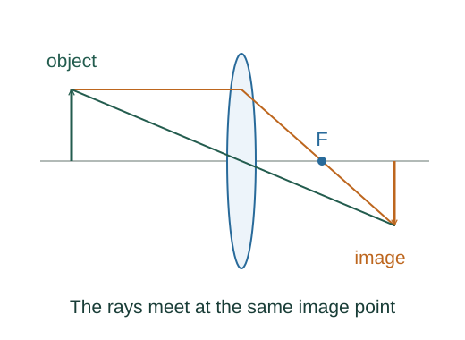

Derive the thin-lens imaging equation
A thin lens brings paraxial rays from one object point to a corresponding image point. Similar triangles made by two principal rays determine image distance and magnification.
What the symbols mean
f: focal length, positive for a converging lens; do: positive real-object distance; di: positive real-image distance; m: signed transverse magnification.
When this applies
Thin lens, paraxial rays, same refractive medium on both sides, and the real-object/real-image positive sign convention. The geometric construction below starts with a converging lens and real image.
Developing the argument

Use the central ray
A ray through the optical centre of an ideal thin lens is treated as undeviated. Its slope relates object height ho to signed image height hi.
Use a parallel incident ray
A ray arriving parallel to the axis at height ho emerges toward the far focal point. At image distance di its height is ho(1 − di/f).
Make both rays meet at the same image
Set the two height ratios equal and rearrange. This eliminates the arbitrary object height.
Interpret signed image distance
For an object inside a converging lens’s focal length, the algebra gives negative di: outgoing rays diverge and their backward extensions meet on the object side. The same signed equation describes a virtual image.
A worked example
A converging lens with f = 10 cm and object at do = 30 cm forms an image at di = 15 cm. Magnification is −0.50, so the image is inverted and half size.
Derivation behind this calculation ↗A point to keep straight
The sign convention is part of the formula. Real lenses with large apertures or thick geometry require corrections.
Check the assumptions and derivation ↗